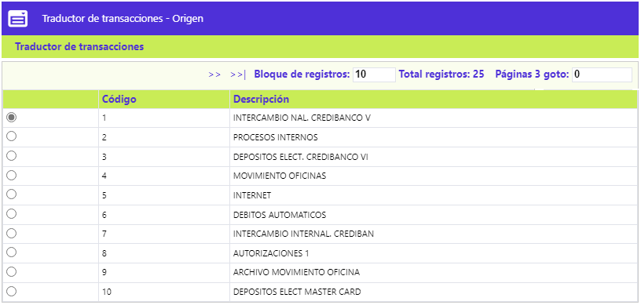
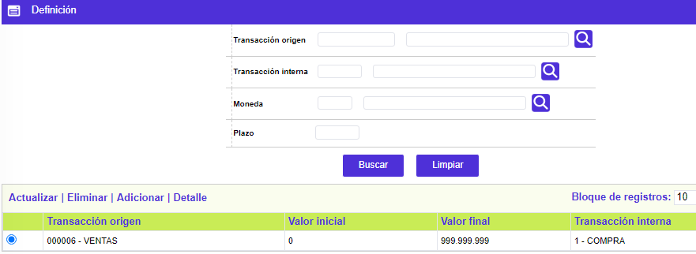
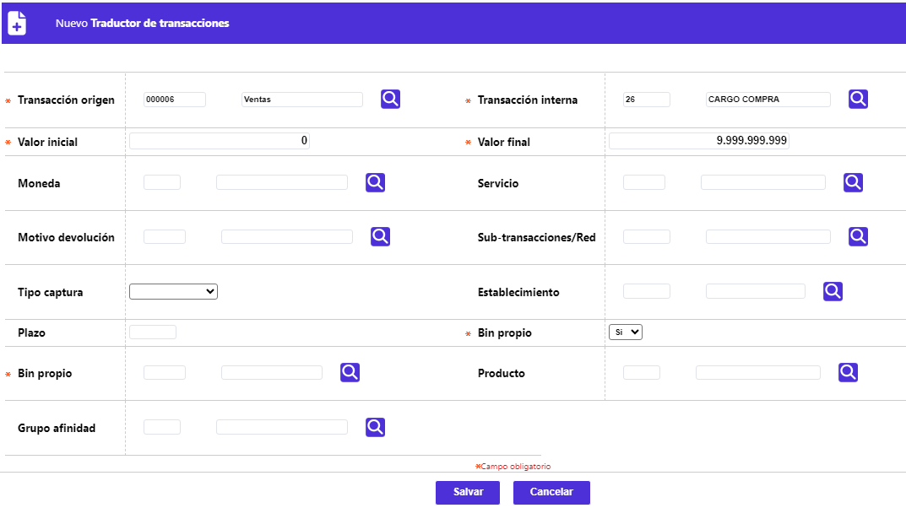
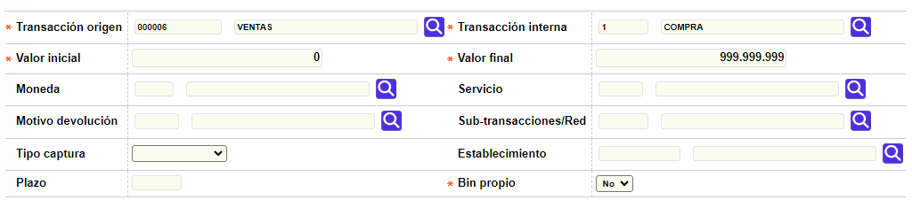
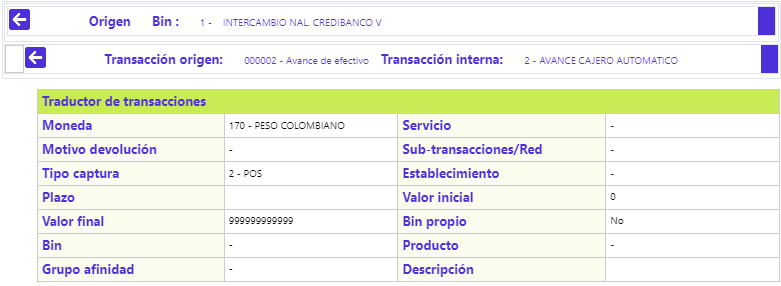

Traductor de transacciones
A través de esta opción se permite la consulta y mantenimiento de la tabla, en la que se relacionan las diversas fuentes u orígenes de transacciones y sus transacciones originales con las transacciones por empresa. Esta parametrización permite realizar un filtro a las transacciones originales logrando una óptima identificación y equivalencia con las transacciones internas, lo que posibilita un nivel enorme de diferenciación. El formulario inicial contiene un único enlace: Traductor de transacciones.

Traductor de transacciones: Este formulario tiene un conjunto de campos mediante los cuales se relacionan o interconectan las transacciones originales con las transacciones internas; se convierte en un filtro que selecciona alguna(s) característica(s) de las transacciones originales y le asocia una transacción interna diferente acorde con la parametrización que de estas últimas haya definido la entidad en Transacciones por empresa, y permite así, identificar clara y plenamente, una transacción original por parte de la entidad y trasladar, si es el caso, la misma información al extracto del cliente. El formulario contiene los enlaces: Actualizar, Eliminar, Adicionar y Detalle.

Adicionalmente, cuenta con un filtro de búsqueda con los siguientes campos:
Transacción origen |
Campo que posee lista de valores poblada mediante la opción Orígenes de transacciones , de la que se debe seleccionar la transacción original por la que se desea realizar la consulta. |
Transacción interna |
Campo que posee lista de valores poblada mediante la opción transacciones por empresa, de la que se debe seleccionar la transacción interna por la que se desea realizar la consulta. |
Moneda |
Campo que posee lista de valores de la cual se puede seleccionar o no el código de la Moneda asociada a la transacción y efectuar un filtro por este concepto. |
Plazo |
Campo numérico de 3 dígitos, no obligatorio, en el que se registra el número de periodos (de 30 días), como criterio por el que se desea realizar la consulta. |
Adicionar: Al activar ese enlace se despliega un formulario con los siguientes campos:

Transacción origen |
Campo que posee lista de valores poblada mediante la opción Orígenes de transacciones de la que se debe seleccionar la transacción original a parametrizar y enlazar con una transacción interna, una vez seleccionado el código, se muestra el nombre de la transacción. |
Transacción interna |
Campo que posee lista de valores poblada mediante la opción transacciones internas por empresa y cuya Naturaleza y Concepto coincidan con las parametrizadas en Orígenes de transacciones , de la que se debe seleccionar la transacción interna a enlazar con la transacción original, una vez seleccionado el código, se muestra el nombre de la transacción. |
Valor inicial |
Campo numérico de 16 dígitos incluidos 2 decimales, obligatorio, en el que la entidad determina el valor mínimo de un rango, si desea parametrizar la transacción original de esa manera, o en su defecto asignar el valor mínimo permitido de 0. |
Valor final |
Campo numérico de 16 dígitos incluidos 2 decimales, obligatorio, en el que la entidad determina el valor máximo de un rango, si desea parametrizar la transacción original de esa manera, o en su defecto asignar el valor máximo permitido. |
Moneda |
Campo no obligatorio, que posee lista de valores de la cual se puede seleccionar el código de la Moneda asociada a la transacción. |
Servicio |
Campo no obligatorio que posee lista de valores poblada mediante la opción Tipos de servicios , de la cual se puede seleccionar el código del servicio asociado al establecimiento en que se realiza la transacción. |
Motivo devolución |
Campo no obligatorio que posee lista de valores poblada mediante la opción Orígenes de transacciones, de la que se puede seleccionar el código del motivo de devolución, acorde con la etapa en que se encuentre la transacción original involucrada en proceso de intercambio o de comprobantes de buena fe. |
Sub-transacciones/Red |
Campo no obligatorio que posee lista de valores poblada mediante la opción Sub transacciones/identificador Red, de la cual se puede seleccionar el código asociado a cada red de cajeros u otros medios para realizar transacciones tales como audio. |
Tipo captura |
Campo no obligatorio, posee lista de valores tipo combo, de la cual se puede seleccionar entre: Sin definir, Manual, POS, Cajeros ATM, Convenios, Oficinas MC, POS MasterCard o ATM MasterCard, el medio a través del que ingresa la transacción al sistema. |
Establecimiento |
Campo no obligatorio que posee lista de valores poblada mediante la opción Información de establecimientos, de la que se puede seleccionar un establecimiento en particular, en el que se realiza la transacción. |
Plazo |
Campo numérico de 3 dígitos, no obligatorio, en el que se digita el número de periodos (de 30 días) asignado por la entidad como plazo por defecto determinado en Transacciones por empresa, en que puede ser diferido el pago de las utilizaciones de naturaleza débito, efectuadas por el cliente. |
Bin propio |
Campo obligatorio, se habilita cuando los demás campos obligatorios ya se han diligenciado, posee con lista de valores de la que selecciona entre Si o No, para la relación de Transacción original y Transacción interna, se parametriza para las utilizaciones efectuadas con tarjetas cuyo bin pertenece a la entidad; cuando se escoge la opción Si, se despliegan tres campos adicionales, de los cuales se selecciona por medio de listas de valores poblados mediante la opción Definición productos, los códigos que identifica el BIN, el Segmento y el Grupo de afinidad correspondientes. |
Actualizar: Al activar ese enlace se despliega el siguiente formulario en el cual todos los campos son modificables:

Detalle: Si el usuario invoca la opción Detalle se despliega el siguiente formulario:
